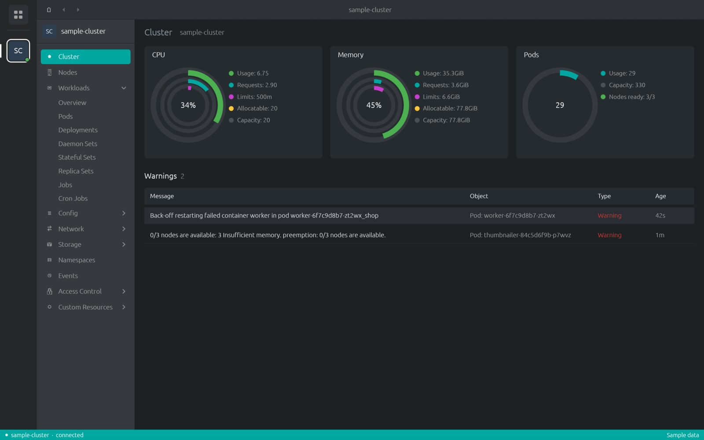
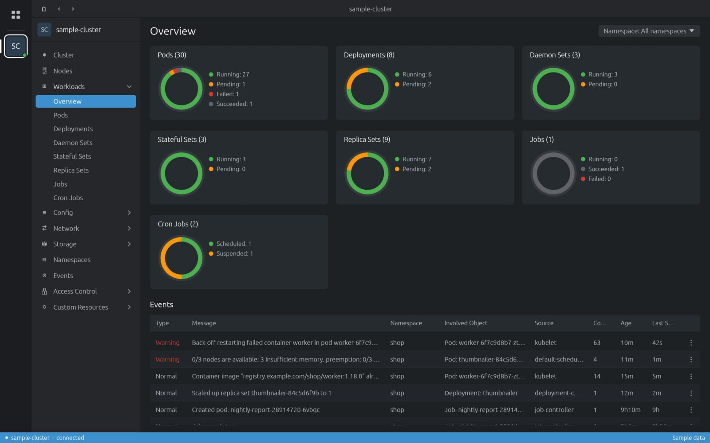
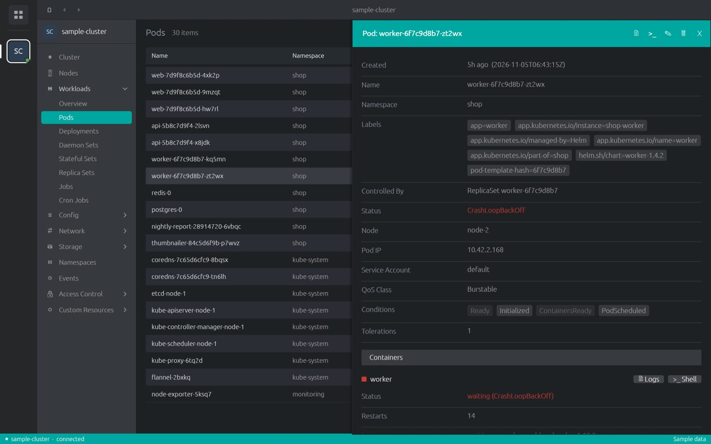
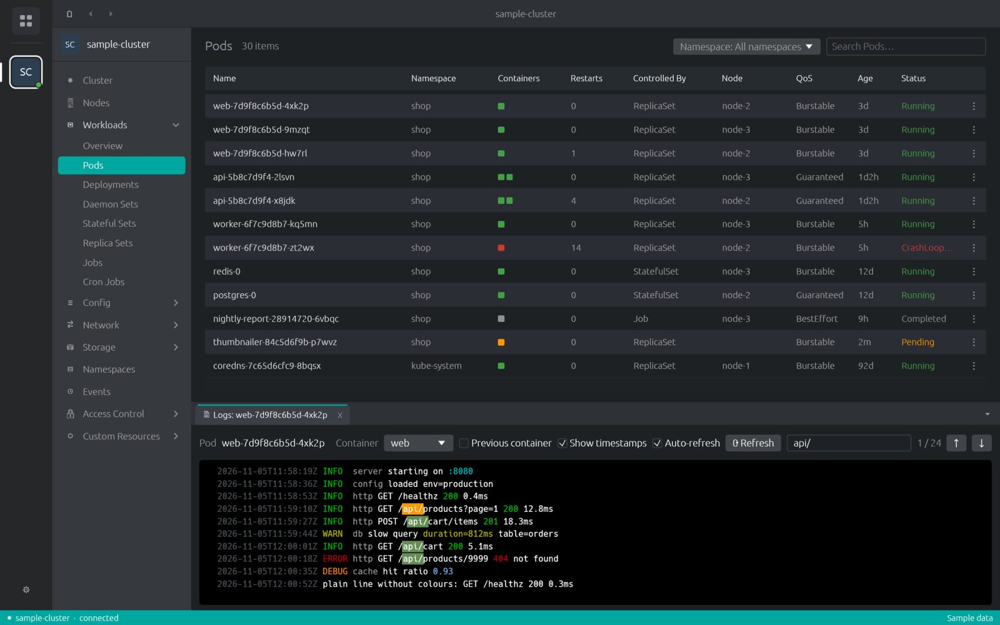
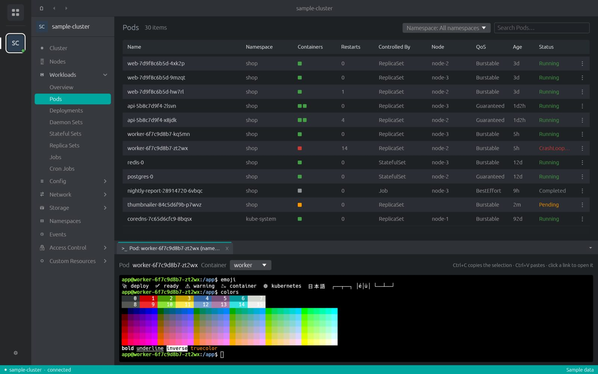
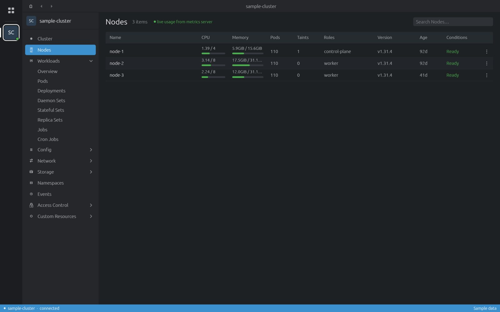
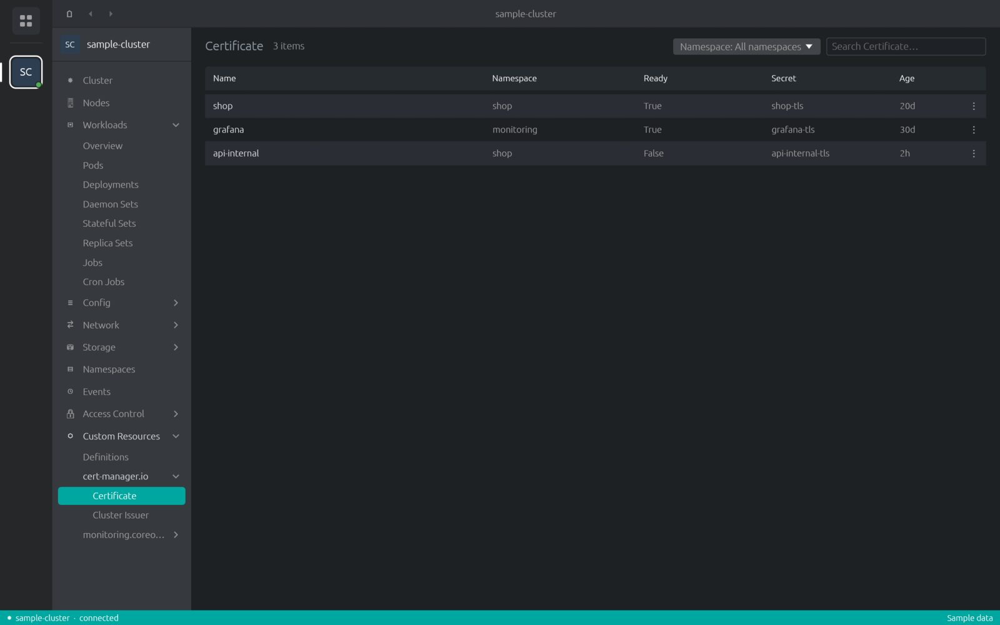

Cluster Desk
A fast desktop Kubernetes UI. One native binary written in Rust, no browser engine inside. Laid out like the Lens family of IDEs, so it feels familiar from the first click.
Latest release from GitHub Releases. Installed copies update themselves. Install notes →

What it does

Every built-in kind
Cluster and workloads overviews, then pods, deployments, services, storage, RBAC and the rest, with a namespace filter and search.

Details, edit, act
A details drawer for any object. Edit its YAML, delete it, scale or restart workloads.

Logs with colours and search
ANSI colours kept, matches highlighted, previous container, timestamps, auto-refresh.

A real terminal into pods
kubectl exec -it in a full terminal: colours, Unicode, copy and paste.

Live usage
Node CPU and memory from metrics-server, volume usage from kubelet stats.

All custom resources
Every CRD in the cluster, grouped by API group, each list showing that definition's own columns.
Sign-in that works
Cluster Desk reads your kubeconfig and runs the kubectl that matches each cluster's version, downloaded on demand and checked against pinned checksums. OIDC (kubelogin), EKS, GKE, AKS, DigitalOcean, Oracle Cloud and Teleport sign-in plugins work; Preferences shows how each cluster signs in and opens a terminal for sign-ins that ask questions. More →
Try it without a cluster
Cluster Desk ships with a built-in sample cluster. Open the app and click
sample-cluster in the Catalog to look around. Every screenshot on this site is that sample cluster.